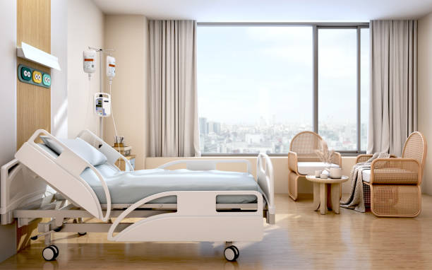
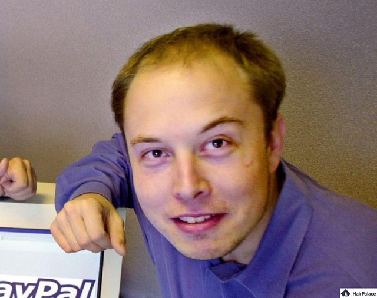

Here is the first option, getting cancer and dying in pain!

Hospital recovery room with beds and chairs.3d rendering. (2022, January 19). iStock. https://www.istockphoto.com/photo/hospital-recovery-room-with-beds-and-chairs-3d-rendering-gm1364971557-435991389
Now for the second option, exchange your money with Elon Musk.

Elon musk before hair transplant: Pictures of elon musk bald – nicehair. Org. (2025, June 13). https://nicehair.org/elon-musk-before-hair-transplant-pictures-of-elon-musk-bald/